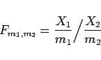

Inhalt Index DeskTop Bronstein

 Wahrscheinlichkeitsrechnung und Mathematische Statistik Wahrscheinlichkeitsrechnung Stetige Verteilungen
Wahrscheinlichkeitsrechnung und Mathematische Statistik Wahrscheinlichkeitsrechnung Stetige Verteilungen


|  | (16.97) |
FISHER- oder F-Verteilung mit den Freiheitsgraden . Es gilt:
| fF | (t) | ||
| = | (16.98a) |
| FF(x) | = | ||
| = | (16.98b) |
| (16.99a) |
| (16.99b) |